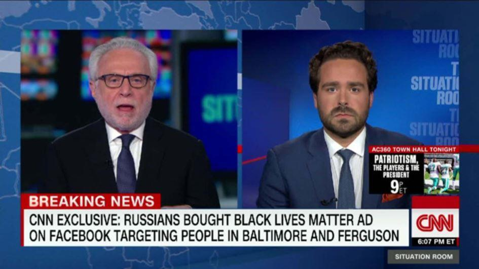

« L’ingérence russe » sert-elle à réprimer la dissidence et camoufler la fraude électorale du Parti démocrate ?
par Julie LÉVESQUE
Voici la suite de l’article publié dans le numéro précédent de « Méthode » « Les Russes attaquent ! » : La Presse joue les porte-paroles du FBI, un service de renseignement peu digne de confiance. Bien que publié 3 mois plus tard, cet article demeure pertinent puisque cette saga d’ingérence russe refuse de mourir malgré l’absence de preuves1.
Ce qui a toutefois été prouvé depuis est que la firme de cybersécurité étasunienne New Knowledge, dont les dirigeants ont des liens étroits avec le département d’État et l’armée des États-Unis2, a elle-même créé sa propre armée de faux bots russes dans le cadre d’une expérience secrète visant à aider un candidat démocrate dans la course au Sénat en Alabama. La firme prétend qu’elle a « expérimenté de nombreuses tactiques [russes] dont on connait aujourd’hui l’influence sur les élections de 2016 », apprenait-on le 19 décembre dernier dans le New York Times3.
De quelle influence parle-t-on ici ? Des représentants du gouvernement étasuniens ont eux-mêmes admis en juin 20174 qu’il n’existe « aucune preuve démontrant que Moscou a pu changer le décompte des votes ». James Clapper, directeur du renseignement national à l’époque, a précisé5 que la communauté du renseignement n’était pas chargée « d’évaluer l’impact des activités russes sur le résultat des élections de 2016 » et qu’il n’existait « aucune preuve que les Russes ont altéré les votes ».
« Deux ans et 200 entrevues plus tard, l’enquête sur les élections de 2016 de la Commission du Sénat sur le renseignement touche à sa fin sans avoir découvert de preuve directe de conspiration entre la campagne de Trump et la Russie selon les républicains et les démocrates au sein de la commission. » Donc s’il n’y a pas de preuve, c’est une théorie de conspiration, non? Source : NBC News1.
Bref, il n’existe à ce jour aucune preuve de collusion entre Trump et les Russes, ni aucune preuve d’influence russe sur les élections de 2016. Cette expérience, elle, prouve cependant qu’il est possible pour une firme étasunienne de créer de faux bots russes pour tenter d’influencer des élections. Sachant qu’une opération d’espionnage de l’armée étasunienne utilisant de faux comptes de réseaux sociaux a été révélée en 2011, sachant que les représentants de Twitter et Facebook n’ont aucune preuve, mais suspectent que les comptes impliqués dans la présumée opération russe étaient réellement russes, il se dégage de cette saga d’ingérence russe une odeur excrémentielle. (Pour plus de détails, voir la première partie de cet article et Faux comptes Twitter russes et manipulation de l’opinion publique : une idée de l’armée américaine7.)
COINTELPRO : LE FBI ET LA RÉPRESSION DE LA DISSIDENCE
Dans cette deuxième partie, nous examinons le tristement célèbre programme de contre-espionnage du FBI, COINTELPRO (Counter Intelligence Program, 1956-1971). Selon l’Encyclopédie Britannica8, cette opération « visait à discréditer et neutraliser des organisations considérées comme subversives de la stabilité politique des États-Unis. L’opération était clandestine et employait souvent des moyens extralégaux [incluant des assassinats] afin de criminaliser diverses formes de luttes politiques et faire dérailler plusieurs mouvements sociaux, comme ceux en faveur des droits civiques et de l’indépendance de Puerto Rico. »
Le but de COINTELPRO était de détruire la nouvelle gauche et, plus particulièrement, d’empêcher l’ascension d’un leader noir charismatique pouvant mobiliser les Afro-américains et en faire une force politique menaçant l’ordre établi. Afin de discréditer les voix dissidentes, on les accusait d’être des communistes, de la même manière qu’aujourd’hui on les accuse de faire de la propagande pour Vladimir Poutine. Est-ce que l’on tente aujourd’hui de lier le mouvement Black Lives Matter à la Russie afin de le discréditer ? Il semble que oui.
Comme le démontre ce documentaire, COINTELPRO était entre autres9 un « effort concerté visant à miner la volonté populaire afin d’éviter l’ascension d’un messie noir qui mobiliserait la communauté afro-américaine pour en faire une force politique significative ».
Martin Luther King, Jr. (MLK) était l’une des cibles importantes de COINTELPRO. Afin de nuire à sa réputation, on l’accusait, entre autres, d’être un communiste.
En 1999, sa famille a gagné une poursuite10 contre « Loyd Jowers et d’autres inconnus ».
Jowers avait déclaré11 en 1993 avoir reçu 100 000 dollars pour planifier le meurtre de King. Le jury a rendu un verdict unanime après 4 semaines de témoignages, 70 témoins et une heure de délibérations :
« En réponse à la question est-ce que Loyd Jowers a participé à une conspiration visant à blesser Dr. Martin Luther King, votre réponse est oui. Concluez-vous aussi que d’autres, incluant des agences gouvernementales, ont participé à cette conspiration alléguée par le défendeur ? Votre réponse à cette question est également oui. » (C’est l’auteure qui souligne.)
La femme de MLK, Coretta Scott King, a déclaré ceci lorsque le verdit a été rendu :
« Les preuves d’une grande conspiration de haut niveau dans l’assassinat de mon mari, Martin Luther King, Jr, sont abondantes, et le verdict unanime de la Cour civile a confirmé notre certitude […] Le jury a clairement été convaincu par l’étendue de la preuve présentée au cours du procès et démontrant qu’en plus de M. Jowers, la mafia, les autorités locales, étatiques et fédérales étaient profondément impliquées dans une conspiration pour assassiner mon mari. Le jury a également affirmé que des preuves accablantes identifient quelqu’un d’autre que James Earl Ray comme étant le tireur, et que M. Ray a été piégé pour prendre le blâme. »
Jamais entendu parler de cette histoire ? La Presse non plus. En avril dernier, le quotidien publiait un texte de l’AFP12 affirmant toujours que « Martin Luther King [a été] assassiné il y a 50 ans à Memphis, au Tennessee, par un ségrégationniste blanc (James Earl Ray) ». Aucune mention de la poursuite ci-dessus.
Aucune mention non plus du fait que Ray, qui avait plaidé coupable en se fiant aux conseils de son avocat pour éviter la peine de mort, s’est rétracté trois jours plus tard et « s’est battu pendant 29 ans pour faire annuler son témoignage ».
On ne peut pas vraiment blâmer La Presse d’omettre ces faits historiques considérables puisque les grands médias étasuniens les ignorent eux aussi ou en nient l’importance, même si le rapport final du House Select Committee on Assassinations a conclu en 1978 qu’il était probable que l’assassinat de King « résultait d’une conspiration13 ».
Sachant qu’à la même époque, le FBI a conspiré avec la police de Chicago pour assassiner Fred Hampton14 (et ici15), un des leaders les plus prometteurs des Black Panthers, on peut soupçonner qu’ils aient trempé dans l’assassinat de King. Surtout lorsqu’on lit des documents internes du FBI16 appelant à « prendre des mesures pour faire disparaître King de la scène nationale ».
L’un des avocats de James Earl Ray, William F. Pepper, a publié en 1995 le livre Orders17 to Kill dans lequel il affirme que son client était un bouc-émissaire et accuse le FBI, la CIA, le renseignement militaire, la mafia et la police de Memphis, Tennessee de « collusion dans une conspiration visant à éliminer l’homme qu’ils voyaient comme un dangereux révolutionnaire ».
Le département de la Justice a publié un rapport d’enquête en 2000 où – oh surprise – il rejette les allégations18 voulant que Ray ait eu des co-conspirateurs et dit ne pas avoir trouvé de preuves à cet effet.
L’avocat et auteur du livre The Assassination of Fred Hampton: How the FBI and the Chicago Police Murdered a Black Panther écrivait dans The Nation19 en 2009: “Nous devons demeurer vigilants à l’égard des crimes et secrets gouvernementaux. »
Un conseil que devraient suivre les journalistes de La Presse.
Nombreux sont ceux qui affirment que nous assistons à une version 2.0 de ce sombre chapitre de l’histoire des États-Unis, car cette affaire d’ingérence russe par le biais des réseaux sociaux a principalement servi à discréditer et réprimer la dissidence, tout comme le spectre du communisme était brandi à l’époque par le FBI pour discréditer les mouvements politiques et personnalités indésirables.
De nombreux médias indépendants critiques de la politique étrangère des États-Unis ont été bloqués par Twitter et Facebook20 dans la foulée des accusations d’ingérence russe.
Le mouvement Black Lives Matter (BLM) est d’ailleurs au cœur de cette présumée opération d’interférence russe, le site Slate allant jusqu’à dire que « les trolls russes étaient obsédés par Black Lives Matter » . Le fait de lier des trolls russes à ce mouvement a pour effet de le discréditer.
En août 2017, le FBI publiait un rapport21 où il identifiait une nouvelle menace intérieure : les « extrémistes de l’identité noire ». Il n’est pas irrationnel de penser que le FBI tente de discréditer BLM, qu’il voit comme une menace, en l’associant à des agents russes comme il l’a fait avec divers groupes de défense des droits des Noirs en les associant à des communistes dans la cadre de COINTELPRO.
Cela dit, une opération du Kremlin visant à « semer la discorde » en exploitant le mouvement BLM a peut-être réellement existé, mais l’hypothèse la plus probable est que ce mouvement ait été exploité à des fins commerciales par de faux comptes, car, si l’on avait voulu avantager Trump dans le cadre de cette opération, on ne l’aurait pas fait en promouvant « avec obsession » BLM. Trump était clairement opposé22 à ce mouvement, qu’il qualifiait de « problème ». En faire la promotion ne pouvait que lui nuire.
Lorsque l’on regarde le portrait général de la situation, cette histoire d’ingérence russe semble profiter davantage aux autorités des États-Unis qu’à celles de la Russie, puisqu’elle permet de discréditer les mouvements dissidents au profit de l’establishment.
Chose certaine, rien ne prouve que le Kremlin utilise une armée de trolls pour « semer la division et la discorde », créer « de la polarisation sociale et politique », « miner la confiance dans les institutions démocratiques » et « favoriser certains candidats aux élections », comme le veut l’article de La Presse.
Il se peut que ce que l’on a surnommé Russiagate soit une opération de camouflage, comme l’a été le Watergate. Selon Noam Chomsky23, le Watergate était un scandale mineur ayant servi à camoufler COINTELPRO, un scandale bien plus important, révélé au même moment, mais auquel la presse n’a pas porté attention.
Il s’agit peut-être aussi tout simplement de propagande ayant divers objectifs.
LE FBI AIDÉ PAR DES « MÉDIAS COOPÉRATIFS »
Le FBI a eu l’aide des grands médias dans COINTELPRO. Ils ont contribué à réprimer la dissidence en publiant en leurs noms de fausses nouvelles fournies par le FBI et visant à discréditer des groupes et des personnes, comme le révélait The COINTELPRO Papers. Documents from the FBI’s Secret Wars Against Domestic Dissent24 en 1990.
Assistons-nous à COINTELPRO 2.0?
Parce qu’on pourrait croire que c’est le FBI qui a écrit l’article de La Presse :
« Un autre acte d’accusation déposé le 19 octobre à la suite d’une enquête du FBI allègue que l’IRA [Internet Research Agency, usine à trolls russe] a tenté d’influer sur le résultat des élections de mi-mandat américaines de mardi dernier.
Le document allègue que les employés de l’IRA utilisent de faux profils sur Facebook, Twitter ou Instagram et se présentent comme des Américains afin de « semer la division et la discorde », de créer « de la polarisation sociale et politique », de « miner la confiance dans les institutions démocratiques » et de favoriser certains candidats aux élections. »
Coïncidence, COINTELPRO avait aussi pour but de « semer la division et la discorde » et de créer « de la polarisation sociale et politique ».
Le FBI a entre autres tenté à l’époque de diviser les Black Panthers et le Student Nonviolent Coordinating Committee, l’une des plus importantes organisations de défense des droits civiques dans les années 1960 (Op. cit. p.127).
Freedom Summer (L’été de la liberté), 1964. Le SNCC, en collaboration avec d’autres organismes de défense des droits civiques, a organisé une campagne au Mississipi visant à inscrire le plus grand nombre possible d’électeurs afro-américains. « Nous vaincrons », dit la bannière.
L’opération Hoodwink25 visait, elle, à fomenter une lutte entre le Parti communiste et la mafia italienne afin que les deux groupes « dépensent toutes leurs énergies, leur temps et leur argent à s’attaquer mutuellement ». Le FBI croyait que « cela aiderait à neutraliser les activités des deux groupes, lesquelles [étaient] néfastes pour le pays ».
C’est exactement ce genre de tactique qui semble être au cœur du Russiagate. Les publicités présumément achetées par l’IRA26 allaient dans tous les sens : pour et contre Hillary Clinton, Bernie Sanders et Donald Trump, pour et contre les musulmans, pour et contre Black Lives Matter.
On peut voir dans cette tactique une simple opération commerciale de pièges à clics ou, comme le veut le FBI, une tentative de « semer la division et la discorde », de créer « de la polarisation sociale et politique ».
Mais à qui profite vraiment cette division ?
Si le Kremlin est réellement derrière ces faux comptes Twitter pro et anti-Black Lives Matter comment profite-t-il des tensions raciales, de la discorde et de la division aux États-Unis ? Pourquoi aurait-il intérêt à faire la même chose chez-nous en exploitant l’islamophobie, comme le veut l’article de La Presse ? Autrement dit, quel serait l’objectif ultime de ces campagnes de désinformation du Kremlin ? En quoi seraient-elles favorables à la Russie ?
Le FBI ne l’explique pas et les journalistes de La Presse non plus.
Qui a davantage intérêt à diviser pour régner ? Qui profite du fait que des citoyens se battent les uns contre les autres au lieu de s’unir et s’en prendre aux autorités ?
Jusqu’à présent, cette histoire de faux comptes russes a provoqué une vague de censure qui n’a profité qu’à l’ordre établi occidental, principalement aux autorités étasuniennes. Ce discours russophobe a également aidé les démocrates à occulter le fait qu’ils ont eux-mêmes fraudé les électeurs, qu’une poursuite a été intentée contre eux, poursuite dont personne ne parle.
VAGUE DE RÉPRESSION DE LA DISSIDENCE ET FRAUDE ÉLECTORALE DU PARTI DÉMOCRATE
Dans la foulée des « révélations » de la présumée campagne de désinformation russe, Twitter et Facebook ont procédé à une vague de censure coordonnée. De nombreux médias indépendants tenant des discours antiguerre, anti-impérialistes ou axés sur la brutalité policière ont été censurés. Ces sites n’avaient absolument rien à voir avec la Russie et n’étaient pas des faux comptes.
Rappelant les tactiques de COINTELPRO, cette répression des médias sociaux se poursuit et se fait en collaboration avec l’Atlantic Council, un cercle de réflexion dont la liste des membres pourrait facilement être confondue avec une liste d’invitation aux retrouvailles de la CIA tellement on y trouve d’anciens dirigeants de l’agence. (Voir Radio-Canada se fie à une organisation liée à la CIA pour traquer les fausses nouvelles27.)
Cette attaque s’ajoute à celle orchestrée il n’y a pas si longtemps par PropOrNot (à droite), un groupe aux origines nébuleuses prétendant « rassembler des outils et de l’information afin d’identifier et de neutraliser la propagande russe ». Elle ciblait également des voix dissidentes.
Pour ce qui est du souhait allégué de la Russie de « miner la confiance dans les institutions politiques » et de « favoriser certains candidats aux élections », les États-Unis n’ont pas besoin des Russes.
Les nombreux partisans de Bernie Sanders ont perdu le peu de confiance qu’ils avaient en leurs institutions lorsque Wikileaks a publié des courriels du Parti démocrate révélant que le parti n’avait pas respecté son devoir de neutralité en favorisant Hillary Clinton, et ce, avant même qu’aucun vote n’ait été effectué.
Un recours collectif a été intenté le 28 juin 2016 contre le Parti démocrate et son ancienne présidente, Debbie Wasserman Shultz28, laquelle a dû démissionner dans la foulée des révélations. Ils sont accusés, entre autres, de fraude électorale. Le parti a tenté de faire rejeter la poursuite en arguant que l’avis de poursuite n’avait pas été remis à une personne autorisée.
Shawn Lucas, l’huissier qui a remis l’avis et devait témoigner en cour a été retrouvé mort le 2 août suivant. Il serait accidentellement mort29 d’une combinaison d’effets nocifs de fentanyl, de cyclobenzaprine et de mitragynine.
Un autre témoin potentiel dans cette poursuite, Seth Rich, un employé du Parti démocrate soupçonné par plusieurs d’être à l’origine de la fuite de courriels du Parti démocrate, est mort le 10 juillet 2016 dans des circonstances qui demeurent nébuleuses30. Wikileaks a offert 20 000 dollars de récompense pour toute information pouvant mener à une condamnation dans cette affaire.
Beranton J. Whisenant Jr., un avocat impliqué dans la poursuite, a lui aussi été retrouvé mort le 25 mai 201731 d’une balle dans la tête. Il se serait suicidé en raison de troubles matrimoniaux.
Le 13 juin 2017, le couple d’avocat en charge du recours collectif a demandé à la cour de protéger32 les plaignants, leurs familles et de leurs avocats en invoquant ces trois décès.
Jamais entendu parler de ce recours collectif ? La Presse non plus, apparemment, laquelle n’a d’yeux que pour la présumée ingérence russe, un discours exploité sous toutes ses coutures par les démocrates depuis la fuite de leurs courriels. Ils prétendent avoir été piratés par des Russes, une allégation réfutée par une enquête33 des vétérans du renseignement étasunien.
C’est bien le Parti démocrate qui a fraudé les électeurs étasuniens en forçant Bernie Sanders hors de la course à l’investiture, pas une usine à troll russe en faisant sortir 7-8 manifestants d’extrême-droite dans les rues du Texas et en publiant des dessins moches de Bernie Sanders en Speedo partagés par 3 personnes.
CONCLUSION
À qui profite donc ce discours alarmant sur les « attaques russes » ? Tout ce qui coule dans le sillon du Russiagate profite à l’ordre établi qui s’en sert pour réprimer la dissidence et accuser ses critiques d’être des agents russes.
Récemment, Daniel Ellsberg, le sonneur d’alerte qui a publié les Pentagon Papers révélant que l’administration Johnson « avait systématiquement menti, non seulement au public, mais aussi au Congrès » à propos de la guerre du Vietnam, a fait une déclaration importante en entrevue à The Real News 34 :
« Je dirais aujourd’hui que la guerre froide était, dans une très grande mesure, du début à la fin, une campagne de mise en marché pour le subventionnement de l’industrie aérospatiale. »
Cette déclaration devrait nous inciter à nous poser la question suivante à propos de tous ces discours paranoïaques sur la menace russe : la nouvelle guerre froide est-elle, elle aussi, une campagne de marketing ?
Elle profite certainement à l’industrie médiatique.
John Bonifield, un producteur de CNN, a admis en juin 201735 à un journaliste non identifié que leurs reportages sur la collusion entre Trump et la Russie étaient de la « bullshit ». Quand le journaliste lui a demandé pourquoi, malgré cela, CNN parlait constamment de la Russie, il a répondu « c’est bon pour les cotes d’écoutes ».
Si c’est bon pour CNN, ça doit être bon pour La Presse.
J.L.
Notes :
1. Senate has uncovered no direct evidence of conspiracy between Trump campaign and Russia -https://www.nbcnews.com/politics/congress/senate-has-uncovered-no-direct-evidence-conspiracy-between-trump-campaign-n970536
2. New Knowledge is an information integrity company. - https://www.newknowledge.com/about-us/
4. x-US Homeland Security Chief Says Russian Meddling Did Not Affect Election Results - https://www.voanews.com/a/ex-us-homeland-security-chief-says-russian-meddling-did-not-affect-election-results/3910023.html
5. CIA Director Wrongly Says U.S. Found Russia Didn't Affect Election Result - https://www.nbcnews.com/politics/elections/cia-director-wrongly-says-u-s-found-russia-didn-t-n812411
6. « Les Russes attaquent ! » : La Presse joue les porte-paroles du FBI, un service de renseignement peu digne de confiance - http://www.revuemethode.org/m021913.html
10. Memphis Jury Sees Conspiracy in Martin Luther King's Killing - https://www.nytimes.com/1999/12/09/us/memphis-jury-sees-conspiracy-in-martin-luther-king-s-killing.html
11. Loyd Jowers, 73, Who Claimed A Role in the Killing of Dr. King - https://www.nytimes.com/2000/05/23/us/loyd-jowers-73-who-claimed-a-role-in-the-killing-of-dr-king.html
12. L'Amérique rend hommage à Martin Luther King - https://www.lapresse.ca/international/etats-unis/201804/04/01-5159784-lamerique-rend-hommage-a-martin-luther-king.php
13. House Select Committee on Assassinations Final Report - https://www.maryferrell.org/showDoc.html?docId=800&relPageId=27&search=Jr._as%20a%20result%20of%20a%20conspiracy
14. COINTELPRO : The Untold American Story http://thirdworldtraveler.com/FBI/COINTELPRO_Untold_Story.html
15. WATCH: “The Assassination of Fred Hampton: How the FBI and Chicago Police Murdered a Black Panther” - https://www.democracynow.org/2014/12/4/watch_the_assassination_of_fred_hampton
29. Shawn Lucas: 5 Fast Facts You Need to Know - http://archive.is/czTOO#selection-1039.0-1039.42
30. Seth Rich: Inside the Killing of the DNC Staffer - https://www.newsweek.com/seth-rich-murder-dnc-hack-julian-assange-hillary-clinton-donald-trump-492084
31. Last hours leading to prosecutor’s mysterious death detailed in new police report –
Partager cette page